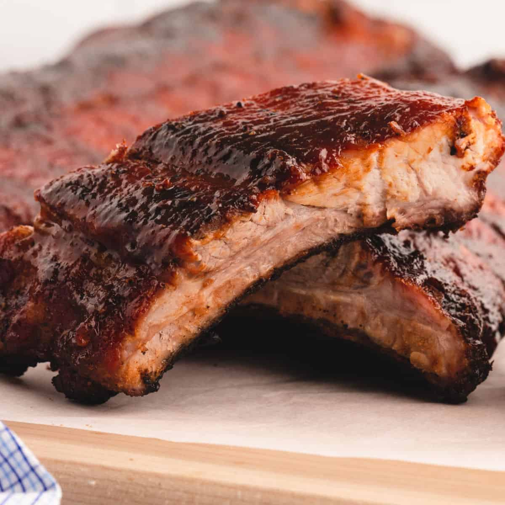

Country-style ribs with bbq sauce recipe

Soon, you too will be able to make a dish this tasty.
This dish consists of a nice looking pork from your preferred butcher shop, your favorite bbq sauce and a fully functional oven.
BBQ pork ribs are a must-have in your cooking dictionary. This Texas's classic is one of the most delicious dishes to exist. And with our help, you too can learn to do it and impress your father in law by showing him your inner chef.
Ingredients:
- 10 country style pork ribs
- 2 teaspoons minced garlic
- 1 medium lemon, thinly sliced
- 1 (18 ounce) bottle barbeque sauce
Steps
- Preheat the oven to 250°F (120°C)
- Place ribs in a single layer in a shallow baking pan or roaster; salt if desired. Spread garlic on ribs, then arrange lemon slices on top.
- Bake in the preheated oven until tender, about 2 hours. Drain any grease and liquid. Pour barbeque sauce over ribs.
- Reduce oven temperature to 225°F (110°C) and cook ribs until sauce bakes into meat, about 1 hour.